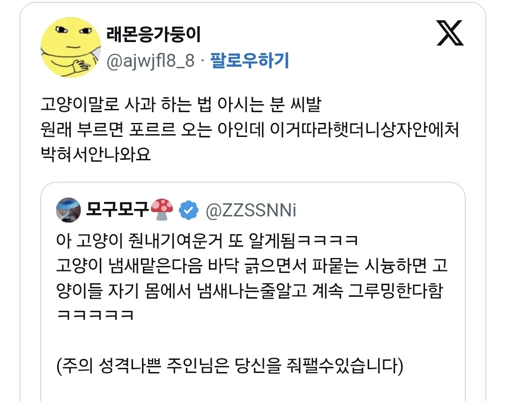
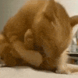

니 몸에서 똥냄새나 이거잖아 ㅋㅋ
그루밍 버튼
ㅋㅋㅋㅋ
zzzzzzzzz

츄르주면서 눈 꿈뻑꿈뻑 해줘 ㅋㅋㅋㅋㅋ
고양이 모욕하기 컨텐츠 많네 ㅋㅋㅋㅋㅋ
고양이는 원래 그루밍 하루종일 해
최상급의 모욕
모욕이나 수치를 아는동물인가 ㄷㄷ
사과하려면 가서 까오오 오 니고니고니고니고 라고 말하면 됨
오징어 사와~~~오징어오징어오징어
니1거?
???: 이게 무슨 냄새야!!!
진짜 귀엽네 ㅋㅋㅋㅋ
진짜 그루밍 하긴 하네 ㅋㅋㅋㅋ